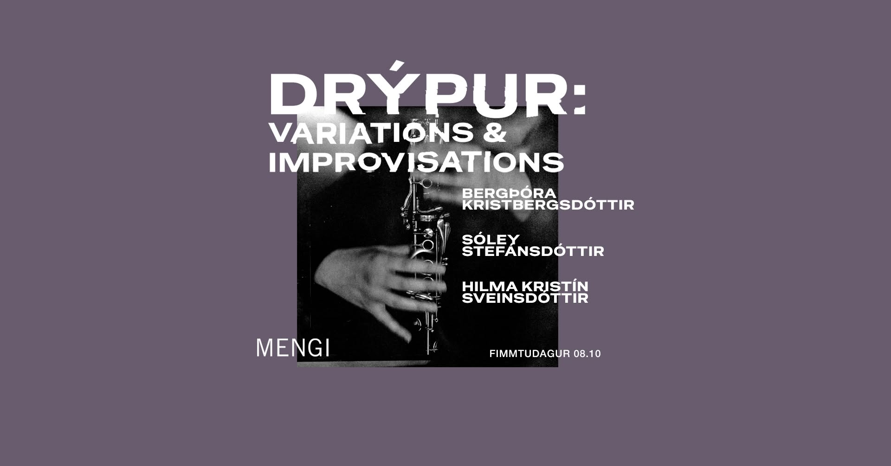
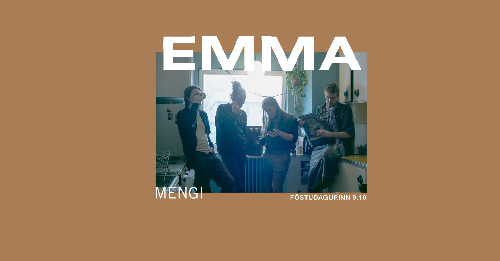
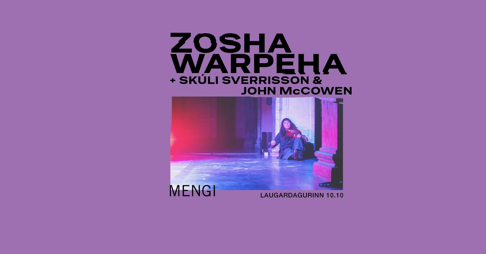
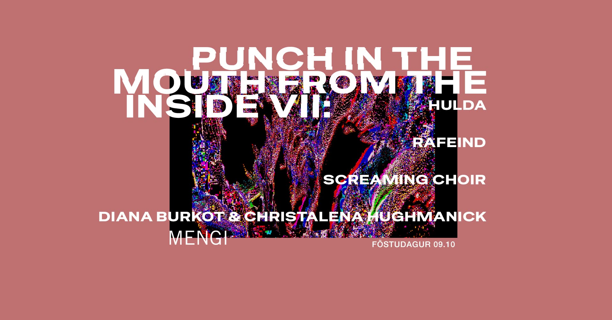
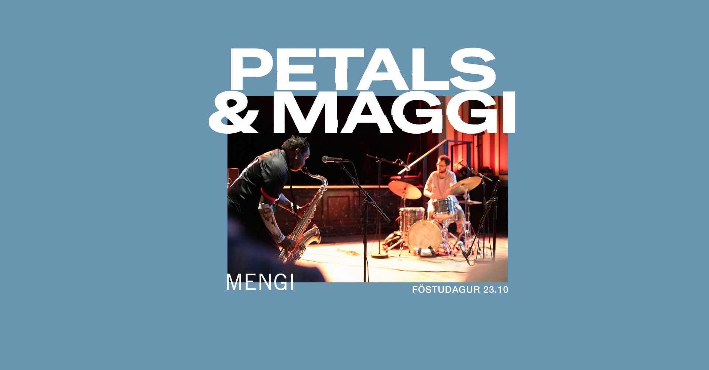

Upcoming Events

THU 08.10 Drýpur: Variations & Improvisations
Tickets Thursday, October 8th DRÝPUR: VARIATIONS & IMPROVISATIONS BERGÞÓRA KRISTBERGSDÓTTIR, SÓLEY STEFÁNSDÓTTIR, & HILMA KRISTÍN SVEINSDÓTTIR doors 19:30 / show 20:00 2500kr / 2000kr students / pay what u can The trio will perform raw variations of Bergþóra Kristbergsdóttir´s album drýpur - Sóley on the accordion, and Bergþóra and Hilma on clarinets. The trio will move freely through a few pieces from the album, allowing the music to shift and transform as each musician finds their own voice within the material. Rather than reproducing the recordings, they´ll explore new perspectives on the pieces, letting them breathe and take unexpected turns. In between the songs, the trio will improvise new material, drawing inspiration from chord progressions and motifs from drýpur. The atmosphere will be calm yet eerie - intimate, warm and slightly unsettling. A cozy setting for music that is allowed to drift, transform and take on a life of its own. ----- BERGÞÓRA KRISTBERGSDÓTTIR is a clarinettist and composer based in Iceland. She creates electronic music blended with instrumental performance, using music programming and clarinet recordings as the basis for her sound design. Her playing is fragile and intensely charged. The amazing SÓLEY STEFÁNSDÓTTIR is an Icelandic songwriter, composer, and producer. She has spent more than a decade and a half crafting music that slips between dark pop, contemporary classical, and cinematic sound design. Her songs built on hushed vocals and stark piano seem to glow from within - tender one moment, quietly unsettling the next. HILMA KRISTÍN SVEINSDÓTTIR is an accomplished clarinettist and composer based in Iceland. Her work spans composition, performance and interdisciplinary collaborations.

FRI 09.10 EMMA
Tickets Friday, October 9th EMMA doors 19:30 / show 20:00 2500kr / 2000kr students / pay what u can Raf-folk hljómsveitin Emma býður upp á kvöldstund fulla af tilraunamennsku og nýrri tónlist. Eftir að hafa gefið út sína fyrstu plötu, Halidome, hefur hljómsveitin nú snúið sér að nýjum lagasmíðum sem verða lagðar á borð fyrir hlustendur að heyra. ------ Atmospheric folk outfit Emma welcomes you to a night of experimentation and new beginnings. Following their critically acclaimed debut album, Halidome, they have a new project in the works. Everything played on the night will be new, unreleased material.

SAT 10.10 Zosha Warpeha / Skúli Sverrisson & John McCowen
Tickets Saturday, October 10th ZOSHA WARPEHA (US) + SKÚLI SVERRISSON & JOHN McCOWEN doors 19:30 / show 20:00 3000kr / 2500kr students / pay what u can ZOSHA WARPEHA is a Brooklyn-based composer-performer working in a meditative space at the intersection of contemporary improvisation and folk traditions. Using bowed stringed instruments alongside her own voice, her long-form compositions explore transformations of time, tonality, and resonant space. She performs primarily on Hardanger d’amore, a sympathetic-stringed instrument closely related to the Norwegian Hardanger fiddle. While her work is informed by the cyclical forms and physical momentum of Nordic folk music, her solo practice "subverts tradition not as a political act, but as a point of departure" (Peter Margasak, Nowhere Street). Warpeha’s debut solo album, silver dawn, was released on Relative Pitch Records in 2024. Orbweaver, a duo collaboration with Mariel Terán, was released on Outside Time in 2025 to critical acclaim, described by The Wire as “simultaneously centered on intimacy and deeply imaginative sound building, delivering a kind of improvisation that, in spite of its experimental edge, feels decidedly human.” Her second solo album, I grow accustomed to the dark, will be released on Outside Time in March 2026. Notable performances have taken place at ISSUE Project Room, Lampo, Emanuel Vigeland Museum, Frequency Festival, Newport Jazz Festival, Vesterheim Museum, The Stone, Detroit Institute of Arts, Greenwood Cemetery Catacombs, and Duluth-stämman Nordic Music Festival. Warpeha has collaborated with artists including Bill Frisell, Eyvind Kang, Shahzad Ismaily, Henry Birdsey, Leila Bordreuil, Elori Saxl, Kaïa Kater, Anne Hytta, and Unni Løvlid. Ongoing creative projects include duos with percussionist Carlo Costa, bassist Tristan Kasten-Krause, and instrument-builder Webb Crawford, as well as a string trio with improvisers Biliana Voutchkova and Isidora Edwards. She has been an artist in residence at ISSUE Project Room and the Anderson Center, and her work has also been supported by the US-Norway Fulbright Foundation, Jerome Foundation, and the Minnesota Arts and Cultural Heritage Fund. She holds degrees in Nordic folk music and jazz & contemporary music from the Norwegian Academy of Music in Oslo and The New School in New York. LINKS Website: www.zoshawarpeha.com Bandcamp: www.zosha.bandcamp.com Instagram: @zoshazosha / www.instagram.com/zoshazosha SKÚLI SVERRISSON has built a unique international career as a composer, instrumentalist, and creative collaborator with a very broad spectrum of international artists. Skúli was active in the downtown music scene of New York, where he collaborated with Ben Monder, Pachora, among others. During this period, he recorded and toured worldwide with the legendary guitarist Alan Holdsworth and was a member of Ryuichi Sakamoto’s band. Skúli worked closely with artist Laurie Anderson for over a decade as a creative collaborator, performer, and producer. He was the music director of Life on a String, which won Anderson a Grammy for the best-sounding record of the year. Skúli has played with free jazz legends such as Wadada Leo Smith and Derek Bailey, performed with revolutionaries like Lou Reed, Jon Hassell, David Sylvian, and Arto Lindsay, and collaborated with new music composers and performers such as Anthony Burr, Sidsel Endresen, and Bára Gísladóttir. JOHN McCOWEN's musical life has become an obsession with discovering a polyphonic language on a historically monophonic instrument - the clarinet. This has led him to a unique acoustic vocabulary that is similar to a shifting soundscape of electronic feedback. John's multiphonic approach is based in drones, difference tones, and beating harmonics as a means to showcase the compositional potential within a single, acoustic sound source. His work has been described by The New Yorker (Steve Smith) as “the sonic equivalent of microscopic life viewed on a slide” and “an astonishing demonstration of pure sound and human will” by The Wire (Phil Freeman). John has collaborated extensively with the composer and instrumentalist, Roscoe Mitchell. He has orchestrated, arranged, and transcribed Mitchell’s works for orchestras and other ensembles as well as performing as a duo of bass saxophone and contrabass clarinet. He has released albums with International Anthem, Edition Wandelweiser, Black Truffle, GRM/Shelter Press, Hallow Ground, and others. He has collaborated with artists such as Roscoe Mitchell, Arto Lindsay, Skúli Sverrisson, Lucy Railton, Weston Olencki, Marja Ahti, and others. John has been artist-in-residence at Headlands Center for the Arts (Sausalito, CA-2024), ISSUE Project Room (Brooklyn, NY-2020), & Lijiang Studio (Yunnan, China-2017,2019). He currently resides in Reykjavík, Iceland where he teaches Music Improvisation at the Iceland University of the Arts and is the artistic director of the experimental arts space, Mengi.

FRI 16.10 PUNCH IN THE MOUTH FROM THE INSIDE VII: Hulda/rafeind/SCREAMING CHOIR/Diana & Christalena
Tickets Friday, October 16th PUNCH IN THE MOUTH FROM THE INSIDE VII: HULDA / RAFEIND / SCREAMING CHOIR / DIANA BURKOT & CHRISTALENA HUGHMANICK doors 19:30 / show 20:00 2500kr / 2000kr students / pay what u can

FRI 23.10 petals & Magnús Trygvason Elíassen
Tickets Friday, October 23rd PETALS & MAGNÚS TRYGVASON ELÍASSEN doors 19:30 / show 20:00 2500kr / 2000kr students / pay what u can petals : flutes, shakuhachi, bass clarinet, b-flat clarinet, piano, tenor saxophone, bells, small percussion Magnús Trygvason Eliassen : drums, percussion petals & magnús invite you to listen to two sets of their new duo project frímínútur, icelandic for recess or playtime where they try to recreate the musics of the playground. https://peterokalule.bandcamp.com/album/fr-m-n-tur tree whistles you over, one who mutters plus minus in leaf margin’s stealth is already there, s-n-e-m-m-a for the skipping time, chime, chase elastic circles braceletting afterthought of double-that, flick-of-the tryst the side-grove secreting the line. burr bells, spells away in the canopy beholds all the turning points in the game w/o reporting back, takk fyrir for that berried half of dangling legged snarl. a clue, rope waved below ligules of grass to unseek this this, sometimes, sometimes ~ Katy Lewis Hood
SAT 24.10 Jesper Pedersen: 50 Years On Planet Earth
Tickets Saturday, October 24th JESPER PEDERSEN: 50 YEARS ON PLANET EARTH doors 19:30 / show 20:00 2500kr / 2000kr students / pay what u can Jesper Pedersen is celebrating 50 years on Planet Earth with a concert at Mengi. For this half-century celebration, Jesper will be joined by Ása Önnu Ólafsdóttir (Asalaus), Berglind María Tómasdóttir, Helga Björg Jóhönnu Árnardóttir and Katie Buckley for an evening of music, sound, improvisation and collaboration. Expect electronics, acoustic instruments, strange sounds, unexpected combinations and probably a few surprises. Jesper is a Reykjavík-based composer, sound artist, performer and educator. Working with electronic sound since the 1990s, his practice spans electroacoustic music, experimental composition, sound art, installation and improvisation. He performs on modular synthesizers, electronics, theremin and unconventional instruments, exploring texture, noise, drone and spatial sound, both solo and in collaboration with others. https://jesper.is